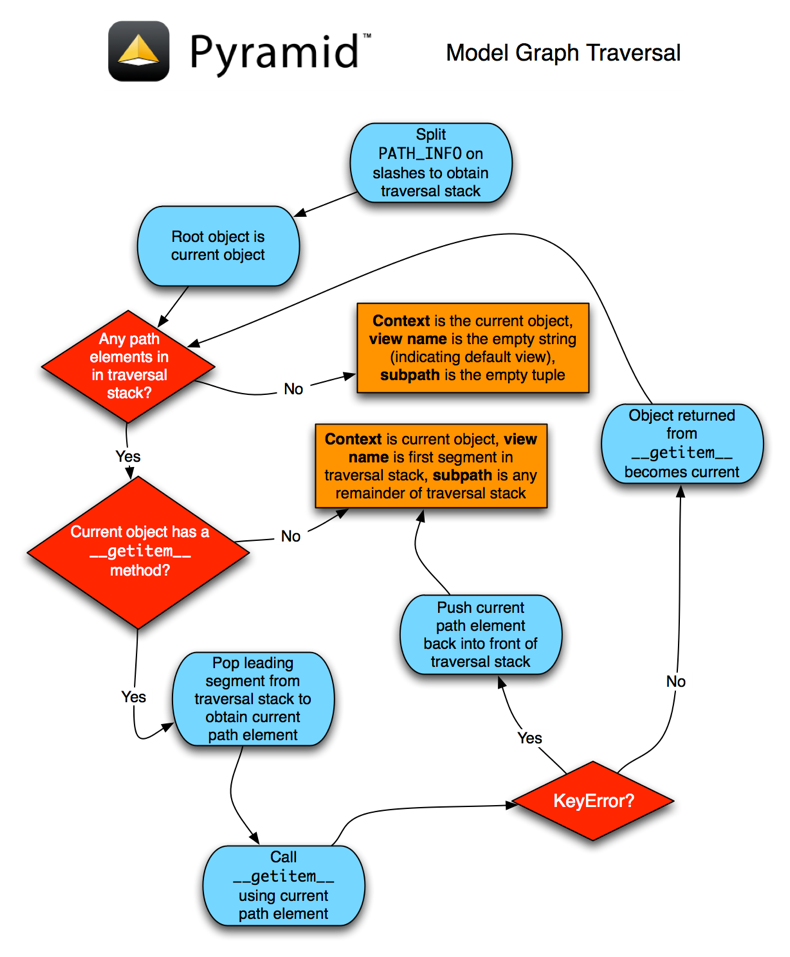

(機械翻訳) トラバーサル¶
この章では、Pyramidでのトラバーサルの仕組みに関する技術的な詳細について説明します。
簡単な例については、doc： `hellotraversal`を参照してください。
*なぜ*あなたがトラバーサルを使うかもしれないかについては、：doc： `muchadoabouttraversal`を参照してください。
A：term： traversal`はURL（Universal Resource Locator）を使って：term： resource`を検索します。これはネストされた辞書のようなオブジェクトのセットです。トラバーサルは、URLのパス部分の各セグメントを使用して：term： リソースツリー 'をナビゲートすることによって行われます。これは、ファイルシステム内のファイルやディレクトリを参照すると考えることができます。 Traversalは、ファイルシステム"ディレクトリ"または"ファイル"に類似した、公開されたリソースが見つかるまでパスを移動します。トラバーサルの結果として見つかったリソースは：term： `request`の：term： context`になります。次に、：term： view lookup`サブシステムを使用して、：term： response`を生成することによって、このリソースを "公開"するためのいくつかのビューコードを見つけます。
注釈
：term： `Traversal`を使用してURLをコードにマップすることはオプションです。最初のPyramidアプリケーションを作成している場合は、新しいPyramid開発者がURLのディスパッチをやや簡単に理解する傾向があるため、term： `URL dispatch`を使用して、URLをトラバーサルではなくコードにマッピングする方が理にかなっています。 URLディスパッチを使用する場合は、この章を読む必要はありません。
トラバーサルの詳細¶
：term： Traversal`はa：term： request`オブジェクトの情報に依存します。 Every：term： request`オブジェクトは：term： WSGI`環境の `` PATH_INFO``部分にURLパス情報を含みます。 `` PATH_INFO``文字列は、ホスト名とポート番号の後、しかしクエリ文字列要素またはフラグメント要素の前にあるリクエストURLの部分です。例えば、http：//example.com：8080 / a / b / c？foo = 1`というURLの `` PATH_INFO``部分は `` / a / b / c``です。
トラバーサルはURLの `` PATH_INFO``セグメントを一連のパスセグメントとして扱います。たとえば、 `` PATH_INFO``の文字列 `` / a / b / c``は `` ['a'、 'b'、 'c'] ``のシーケンスに変換されます。
このパスシーケンスは：term： リソースツリー 'を介して下降し、各パスセグメントのリソースを検索します。各ルックアップは、ツリー内のリソースの ` __getitem__``メソッドを使用します。
たとえば、パス情報シーケンスが `` ['a'、 'b'、 'c'] ``：
- ：term： `Traversal`は：term：`ルートファクトリ `を呼び出すことによってアプリケーションの：term：`ルート `リソースを取得することから始まります。 ：term： `root factory`は、アプリケーションのトラバーサルルートとして適切なオブジェクトを返すように設定できます。
- 次に、最初の要素（ `` a '``）がパスセグメントシーケンスからポップされ、ルート内の対応するリソースを検索するためのキーとして使用されます。これは、その値（ `` 'a```）を引数としてルートリソースの `` __getitem__``メソッドを呼び出します。
- ルートリソースがキー "` 'a``を持つリソースを "含んでいる"場合、その `` __getitem__``メソッドはそれを返します。 ：term： `context`は一時的に" A "リソースになります。
- 次のセグメント（ `` b'``）はパスシーケンスからポップされ、その値（ `` b'``）を引数として"A "リソースの `` __getitem__``が呼び出されます。我々はそれが成功すると推定するでしょう。
- "A "リソースの `` __getitem__``は"B "と呼ばれる別のリソースを返します。 ：term： `context`は一時的に" B "リソースになります。
トラバーサルは、パスセグメントシーケンスが使い果たされるか、path要素をリソースに解決できなくなるまで続きます。どちらの場合でも、：term： context`リソースは、トラバーサルが正常に解決された最後のオブジェクトです。トラバーサル中に見つかったリソースが ` __getitem__``メソッドを持たない場合、または `` __getitem__``メソッドがa：exc： KeyError`を発生させた場合、トラバーサルは直ちに終了し、そのリソースは：term： context`になります。
a：term： traversal`の結果には：term： view name`も含まれます。パスセグメントシーケンスが使い尽くされる前にトラバーサルが終了した場合、：term： view name`は* next *残りのパスセグメント要素です。 ：term： `traversal`がすべてのパスセグメントを費やした場合、：term： view name`は空の文字列（ `` '`` `）です。
コンテキストリソースと、：term： view name`は、：term： view callable`を見つけるために：term： view lookup`サブシステムによって同じリクエスト内で後で使用されます。方法：app： `Pyramid`がビューの参照を行う方法については、：ref： view_config_chapter`の章で説明しています。
リソースツリー¶
リソースツリーは、：term： `root`リソースで始まるネストされた辞書的なリソースオブジェクトのセットです。 ：term： `traversal`を使用してURLをコード化するためには、アプリケーションで：term：`リソースツリー 'を：app： `Pyramid`に指定する必要があります。
アプリケーションのルートリソースを提供するには、：app： Pyramid：term：` Router`はa：term： ルートファクトリ 'と呼ばれるコールバックで設定されます。ルートファクトリは起動時に：term： `Configurator`の `root_factory``引数としてアプリケーションから提供されます。
ルートファクトリは：term： request`オブジェクトを受け取り、：term： resource tree`のルートオブジェクトを返すPython呼び出し可能オブジェクトです。関数またはクラスは、通常、アプリケーションのルートファクトリとして使用されます。単純なルートファクトリクラスの例を次に示します。
1 2 3 | class Root(dict):
def __init__(self, request):
pass
|
以下は、このルートファクトリをスタートアップコンフィギュレーション内で、 term： config`という名前のインスタンスに渡すことによって使用する例です：
1 | config = Configurator(root_factory=Root)
|
：class： 〜pyramid.config.Configurator`コンストラクタの root_factory``引数は、要求がアプリケーションに入るたびにルートリソースを生成するために呼び出される、このルートファクトリを登録します。この方法で登録されたルートファクトリは、グローバルルートファクトリとも呼ばれます。ルートファクトリは、別のモジュールに定義されているルートファクトリを参照できる：term： `dotted Python name`として `Configurator``に渡すこともできます。
もし：term： root factory`が：app： Pyramid`：term： Configurator`コンストラクタに渡された場合、または None``の root_factory``値がa：term： defaultルートファクトリ 'が使用される。デフォルトルートファクトリは、常に子リソースを持たないリソースを返します。効果的に空です。
通常、トラバーサルベースのアプリケーションのルートファクトリは、上記の ``ルート ``クラスより複雑です。特に、データベース接続または別の永続化メカニズムに関連付けられている可能性があります。上記の `` Root``クラスはPyramidにあるデフォルトルートファクトリに似ています。デフォルトのルート・ファクトリーは非常にシンプルであまり役に立ちません。
注釈
リソースツリーに含まれる項目が「永続的」（単一のプロセスの実行よりも長く持続する状態）の場合、他の多くのフレームワークで使用されるterm： `domain model`オブジェクトの概念に似ています。
リソースツリーは、* container リソースと leaf リソースで構成されます。 * container *リソースは container リソースと leaf リソースの間に1つの違いがあります： container リソースは leaf *リソースが存在しないときには `` __getitem__``メソッドを持っています。このメソッドの存在は、オブジェクトが"containerish "であるかどうかをPython自体がどのように判断するかである（辞書オブジェクトは"containerish "です）ので、 "__getitem__``メソッドは、 "）。
各コンテナリソースは、子リソースを返すか、 `` __getitem__``に渡された名前に基づいて `` KeyError``を発生させることが想定されています。
リーフレベルのインスタンスは `` __getitem__``を持たなくてはなりません。歴史的な不平等を通って `` __getitem__``を持つインスタンスがすでに存在する場合、これらのリソースタイプをサブクラス化し、 `` __getitem__``メソッドで単に `` KeyError``を発生させるべきです。または、それらを廃止し、別の戦略を考え直してください。
通常、トラバーサルルートは*コンテナ*リソースであるため、他のリソースも含まれています。しかし、コンテナである必要はありません。あなたのリソースツリーは、あなたが必要とするほど浅くても深くてもかまいません。
一般に、リソースツリーは、現在の要求の `` PATH_INFO``で記述された一連のパス要素を使用してルートリソースからトラバースされます。パスセグメントがある場合、ルートリソースの `` __getitem__``は次のパスセグメントとともに呼び出され、別のリソースを返すことが期待されます。結果のリソースの `` __getitem__``は、次のパスセグメントで呼び出され、別のリソースを返すことが期待されます。これは、すべての経路セグメントが使い果たされるまで、*無限に*起こります。
トラバーサルアルゴリズム¶
このセクションでは、app： `Pyramid`トラバーサルアルゴリズムについて説明します。アルゴリズムの説明、アルゴリズムの仕組みの図、アルゴリズムが特定のリソースツリーに対してどのように動作するかを理解するのに役立つトラバーサルシナリオの例を提供します。
term： view lookup`についても少し話します。 ：ref： `view_config_chapter`章では、term： view lookup`について詳しく説明しています。これは、ビューに関する情報源です。技術的には：term： view lookup`は：app： Pyramid`サブシステムであり、完全にトラバーサルから分離されています。しかし、次のいくつかのセクションの例では、ほとんどの場合、一緒に使用されるため、トラバーサルとビューの参照がどのように連携するかを理解するために、ビューのルックアップの基本的な動作について説明します。
トラバーサルアルゴリズムの説明¶
ユーザーがトラバーサル型アプリケーションからページをリクエストすると、システムはこのアルゴリズムを使用して：term： context`リソースと：term： view name`を検索します。
ページのリクエストは、標準：用語：WSGIの要求（WSGI環境で表され、WSGIの start_response`呼び出し可能）の観点から：app： Pyramid`：term： router 。
ルータはWSGI環境に基づいて：term： `request`オブジェクトを作成します。
：term： root`は：term： request`で呼び出されます。 ：term： `root`リソースを返します。
ルータは、WSGI環境の `` PATH_INFO``情報を使用して、トラバースするパスセグメントを決定します。先頭のスラッシュは `` PATH_INFO``から取り除かれ、残りのパスセグメントはスラッシュ文字で分割され、トラバーサルシーケンスを形成します。
トラバーサルアルゴリズムは、デフォルトでは、最初のURLを引用符で囲まずに、自然なバイト文字列（ `` str``型）表現から `` PATH_INFO``から派生した各パスセグメントをUnicodeデコードしようとします。 URLの引用符は、Pythonの標準ライブラリ `` urllib.unquote``を使って行います。 URLでデコードされた文字列からUnicodeへの変換は、UTF-8エンコーディングを使用して試みられます。 `` PATH_INFO``中のURLで引用されていないパスセグメントがUTF-8デコードを使ってデコードできない場合、a：exc： TypeError`が送出されます。セグメントは完全なURL引用符で囲まれておらず、UTF8でデコードされてから、トラバース中に任意のリソースの ` __getitem__``に渡されます。
このように、 `` / a / b / c``の `` PATH_INFO``変数を持つリクエストはトラバーサルシーケンス `` [u'a、u'b '、u'c'] ``にマップされます。
：term： Traversal`はルートファクトリから返されたルートリソースから始まります。トラバーサルシーケンス ` [u'a '、u'b'、u'c ']
に対して、ルートリソースの `` __getitem__``は ``' a``という名前で呼び出されます。トラバーサルはシーケンスを通って続きます。この例では、名前が `` a``であるルートリソースの `` __getitem__``がリソース（別名リソース\ "A \"）を返した場合、そのリソースの `` __getitem__``は `` ' b'。リソース"A "が `` 'b'``を要求されたときにリソース"B "を返した場合、リソースBの `` __getitem__``には ``' c'``という名前が尋ねられ、リソース"C "トラバーサルは、（a）パス全体が使い果たされたとき、（b）リソースが "__getitem__"から：exc： KeyError`を発生したとき、（c）最後でないパス要素トラバーサルが（d）任意のパス要素の先頭に文字 ` @@ ``が付加されている場合（ @@`の後に続く文字が ` @@@ ' ``トークンは：term： `view name`として扱われるべきです）。
前のステップでトラバーサルが終了した場合、トラバーサル中に最後に見つかったリソースは：term： context`とみなされます。トラバーサルが終了したときにパスが使い果たされた場合、：term： `view name`は空文字列（ ' ``）とみなされます。ただし、トラバーサルが終了する前にパスが使い果たされなかった場合は、残りの最初のパスセグメントがビュー名として扱われます。
：term： view name`の後に続くパス要素は：term： subpath`とみなされます。サブパスは常にトラバーサルが完了した後に残された `` PATH_INFO``からのパスセグメントのシーケンスです。
：term： context`リソース、：term： view name`、および：term： subpath`のような関連する属性が見つかると、：term： traversal`のジョブは終了します。これは、取得した情報を呼び出し元に返す：app： Pyramid：term：` Router`です。その後、コンテキストとビュー名の情報を使ってterm： `view lookup`を呼び出します。
トラバーサルアルゴリズムは、2つの特殊なケースを公開します。
- あなたはしばしば：term： `view name`で終わることになります。これは、特定のトラバーサルの結果としての空文字列です。これは、ビュー参照機構が：term： `default view`を参照すべきであることを示します。デフォルトのビューは、名前なしで登録されたビューまたは空の文字列と同じ名前で登録されたビューです。
- パスセグメント要素が特殊文字 `` @@ ``（ゴーグルとみなす）で始まる場合、そのセグメントの値からゴーグル文字を差し引いた値は：term： `view name`とみなされ、トラバーサルはそこで停止します。これにより、ツリー内のリソース名と同じ名前を持つビューに明白に対処することができます。
最後に、トラバーサルは：term： `virtual root`を探す責任があります。仮想ルートは"仮想ホスティング"の間に使用されます。詳細については、：ref： `vhosting_chapter`の章を参照してください。この章ではこれ以上は話しません。
トラバーサルアルゴリズムの例¶
アナロジーと記述のみでトラバーサルアルゴリズムを理解することは誰も期待できないので、具体的なURLとリソースツリーの構成を使用するいくつかのトラバーサルシナリオを検討してみましょう。
ユーザーが `` http：// example.com / foo / bar / baz / biz / buz.txt` 'を尋ねるとしましょう。その場合のリクエストの `` PATH_INFO``は `` / foo / bar / baz / biz / buz.txt``です。このリクエストが来ると、次のリソースツリーをたどっているとします。
/--
|
|-- foo
|
----bar
ここで何が起こるのですか？
- ：term： `traversal`はルートをトラバースし、見つかった" foo "を探します。
- ：term： `traversal`は" foo "をトラバースし、" bar "を見つけようとします。
- ：term： traversal`は" bar "をトラバースし、見つからない" baz "を探します（" bar "リソースは" bazを要求されたとき：exc： `KeyError "）。
この時点で"baz "が見つからないという事実は、エラー状態を意味するものではありません。それは以下を意味します：
- ：term： `context`は、" bar "リソースです（コンテキストは、トラバース中に見つかった最後のリソースです）。
- ：term： view name`は `baz``です。
- ：term： subpath`は （ 'biz'、 'buz.txt'） `です。
この時点で、トラバーサルが終了し、term： `view lookup`が始まります。
それは"コンテキスト"リソースなので、ビュールックアップ機構は"bar "を調べて"type "を探します。コンテキストが `` Bar``型であることを発見したとします（ "bar "はクラス `` Bar``のインスタンスであるため）。 ：term： view name`（ baz`）と型を使って、view lookupは：term：`アプリケーションレジストリ `にこの質問をします：
- 私は：term： view callable`を：term： view configuration`を使って"baz "という名前で登録してください。これはクラス `` Bar``に使用できます。
ビュールックアップで一致するビュータイプが見つからないとします。この状況では、：app： Pyramid：term：` router`は：term： `Not Found View`の結果を返し、要求は終了します。
ただし、このツリーの場合：
/--
|
|-- foo
|
----bar
|
----baz
|
biz
ユーザーは `` http：// example.com / foo / bar / baz / biz / buz.txt``を要求します
- ：term： `traversal`は" foo "をトラバースし、" bar "を見つけようとします。
- ：term： `traversal`はbarをトラバースし、bazを見つけることを試みます。
- ：term： `traversal`はbaz をトラバースし、bizを見つけようとします。
- ：term： `traversal`は" biz "をトラバースし、見つからない" buz.txt "を探します。
この時点で"buz.txt "に関連するリソースが見つからないということは、エラー状態を意味するものではありません。それは以下を意味します：
- ：term： `context`は、" biz "リソースです（コンテキストは、トラバース中に見つかった最後のリソースです）。
- ：term： `view name`は" buz.txt "です。
- ：term： subpath`は空のシーケンスです（ （） `）。
この時点で、トラバーサルが終了し、term： `view lookup`が始まります。
それは"context "リソースなので、ビュー参照機構は"biz "リソースを調べて、"type "が何であるかを調べます。そのリソースが "Biz"型であると判断したとします（"biz "はPythonクラス "Biz"のインスタンスなので）。 ：term： view name`（ buz.txt`）と型を使って、view lookupは：term：`アプリケーションレジストリ `にこの質問をします：
- 私は：term： view callable`をクラス Biz``に使うことができる buz.txt``という名前の：term： view configuration`で登録しました。
その質問がアプリケーションレジストリによって回答されたとしましょう。このような状況では、アプリケーションレジストリは：term： view callable`を返します。呼び出し可能なビューはcurrent：term： `WebOb：term：` request`を唯一の引数 `` request``で呼び出されます。それは応答を返すことが期待されます。
ビュー構成でのリソースインタフェースの使用¶
ビューをPythonリソース* class *に名前を付ける `` context``で登録するのではなく、：term： interface`である `context``で呼び出し可能なビューを任意に登録することができます。インタフェースは任意のリソースオブジェクトに任意にアタッチできます。ビュールックアップはコンテキストインタフェースを特別に扱うため、リソースのアイデンティティーはそれを実装するクラスのアイデンティティと離れることがあります。その結果、ビューをインタフェースに関連付けることで、リソースタイプの2つ以上の異なる実装間で単一のビューを共有するための柔軟性を高めることができます。たとえば、異なるPythonクラス型の2つのリソースオブジェクトが同じインタフェースを共有する場合、同じビュー構成を使用して、両方を「コンテキスト」として指定できます。
ビューディスパッチ中にアプリケーションでインターフェイスを使用するには、インターフェイスを作成し、このインターフェイスを参照するインターフェイス宣言でリソースクラスまたはインスタンスをマークアップする必要があります。
リソースを* class *リソースに接続するには、インタフェースを定義し、：func： `zope.interface.implementer`クラスデコレータを使用してインタフェースをクラスに関連付けます。
1 2 3 4 5 6 7 8 9 | from zope.interface import Interface
from zope.interface import implementer
class IHello(Interface):
""" A marker interface """
@implementer(IHello)
class Hello(object):
pass
|
リソースをインスタンス*に接続するには、インタフェースを定義し、：func： `zope.interface.alsoProvides`関数を使用してインタフェースをインスタンスに関連付けます。この関数は、インタフェースがそれに接続されるようにインスタンスを変更します。
1 2 3 4 5 6 7 8 9 10 11 12 13 | from zope.interface import Interface
from zope.interface import alsoProvides
class IHello(Interface):
""" A marker interface """
class Hello(object):
pass
def make_hello():
hello = Hello()
alsoProvides(hello, IHello)
return hello
|
インタフェースをリソースインスタンスまたはリソースクラスのいずれかに関連付ける方法に関係なく、そのインタフェースをビュー呼び出し可能に関連付けるコードは同じです。上記のIHelloインタフェースがアプリケーションのルートにあり、そのモジュールの名前が "resources.py"であると仮定すると、下のインタフェース宣言は `` mypackage.views.hello_world``を関連付けますこのインタフェースを実装または提供するリソースを持つビュー
1 2 3 4 | # config is an instance of pyramid.config.Configurator
config.add_view('mypackage.views.hello_world', name='hello.html',
context='mypackage.resources.IHello')
|
：term： context`であると判断されたリソースはこのインタフェースを提供し、 hello.html``という名前のビューはURLごとに参照され、 mypackage.views.hello_world `view callableが呼び出されます。
ビューがリソース・クラスに対して登録され、ビューがリソース・クラスが実装するインタフェースに対しても登録されている場合は、あいまいさがあります。リソースクラスに登録されたビューは、リソースクラスがインプリメントする任意のインタフェースに登録されたビューよりも優先されます。したがって、1つのビュー構成がリソースのクラス型の両方の「コンテキスト」に名前を付け、別のビュー構成がリソースのクラスによって実装されるインタフェースの「コンテキスト」に名前を付け、両方のビュー構成がそれ以外の場合は同じです。コンテキストのクラスに登録されているビューは"勝つ"でしょう。
ビュー構成内で使用するためのインタフェースを持つリソースの定義の詳細については、：ref： `resources_which_implement_interfaces`を参照してください。
参考文献¶
チュートリアル：term： traversal`は、：app： Pyramid`アプリケーション内で使用できます：ref： `bfg_wiki_tutorial`にあります。
詳細については、：ref： view_config_chapter`の章を参照してください：term： view lookup`。
：mod： `pyramid.traversal`モジュールには、アプリケーションコード内からのトラバーサル呼び出しなど、トラバーサルを処理するAPI関数が含まれています。
：meth： `pyramid.request.Request.resource_url`メソッドは、リソースツリーから取得したリソースが与えられたときにURLを生成します。